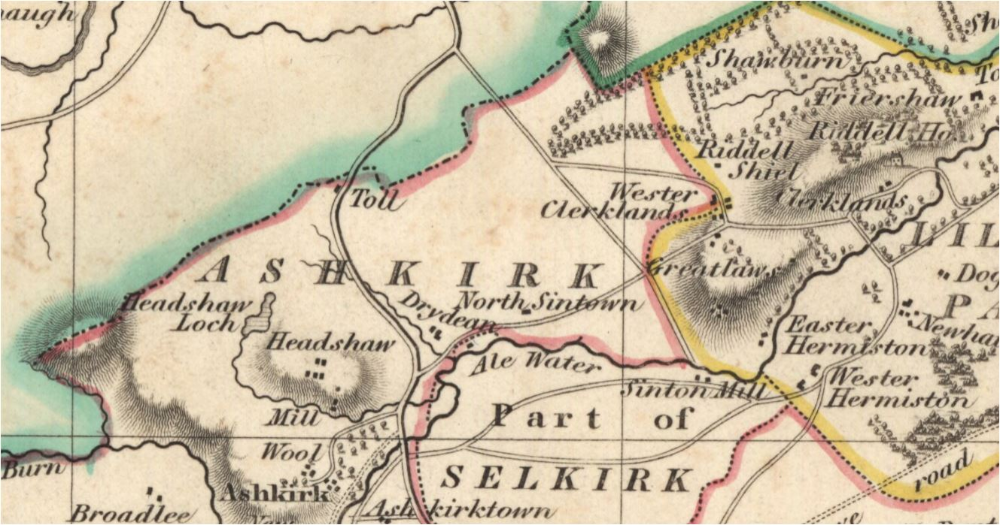

|
Veitch
Index
Veitch Family Lineages
Veitch of North Sinton
Ashkirk Parish, Roxburghshire
"North Syntoun was given by Archibald,
Earl of Douglas, surnamed the Tyneman, to Barnabas le Vache de
Dawyk, styled 'dilecto armigero nostro' in 1407. The master and
armour-bearer both fell - after having been together at homildon
and several other desperately fought fields - in the battle of
Verneuil in 1424." - The History and Poetry of the Scottish
Border, Vol 2
[Origines Parochiales Scotiae, Vol 1; Bannatyne Club, Edinburgh,
1850; Page 314] "The land of Sintun is mentioned as
marching with that of Lillisclif in a charter of the early part
of the thirteenth century. In 1292 Alexander of Synton was sheriff
of Selkirk—in 1296 Mary of Synton, apparently bis widow,
was ordered to deliver up her lands to King Edward—and in
the same year Isabella, wife of Andrew of Synton, was allowed
to receive back a portion of her lands to cover certain expenses.
In the fifteenth century, about 1474, it appears to have been
in part possessed by Wache or Veitch of Dawic. Part of it was
subsequently, if not previously, the property of the Scots of
Sinton. In 1508 Sintoun was held by Robert Scot, in 1524 by Walter
Scot, and in 1557-8 by one of the same family, whose sons were
Walter, Robert, William, and James, the flrst being designated
'young laird of Syntone.' Satchells mentions the Scots of Sintoun
as possessors of the lands at an early period, and names the
representative of the family as one of those summoned by Buccleuch
to the rescue of the famous 'Kinmont Willie.'
The lands were latterly distinguished into those of South
Sinton, on the south of the Ale, and of North Sinton, on the
north of the Ale, the former being of the old extent of £10,
and in the seventeenth century still in the possession of the
Scots, while the latter, of the old extent of £5. were
in both the sixteenth and seventeenth century the property (probably
by old hereditary right) of Veitch of Dawic. The barony of Sinton
included the lands of Whitslaid and Dalgles, and the lands of
North Sinton were annexed to the barony of Dawic (source: Retours)"

Ashkirk Parish, Roxburghshire, showing Veitch lands
of North Sinton and the Clerklands in neighboring Lilliesleaf
Parish
1(iii). John Veitch of
North Sinton, Ashkirk Roxburghshire. John received
a grant of the lands of Sinton from his brother Alexander in
exchange for those of Easter Dawyck, and founded the branch of
the Veitches of North Sinton. He was succeeded by his son George,
who in 1525 had the lands confirmed to him by William Veitch
of Dawyck, who held the superiority, and who in the following
year entered Walter, the son of George, in them.
Children were:
2(i). George Veitch in 1525 had the lands of North
Synton confirmed to him by William Veitch of Dawyck, who held
the superiority,
Children were:
3(i). Walter Veitch was entered lands at North Synton
in 1526 as son of George Veitch
3(ii). John Veitch [?brother] was in possession of
lands at North Synton in 1535
Children were:
4(i). Walter Veitch -
Children were:
5(i). James Veitch - served heir to his father Walter,
and in 1604 had a charter from the King of the lands of Corslie
in the forest of Ettrick, of which he is said to be the native
tenant.
"1590….Two relatives of the slain youth [Patrick
Veitch], James Veitch, younger of North Synton and Andrew Veitch,
brother of the Laird of Tourhope set upon John Tweedie, tutor
of Drumelzier and burgess of Edinburgh as he walked the streets
of the capital and killed him. "
1601 Oct 15 [12: Inq. Roxburgh] Jacobus Vaitche de North
Syntoun - heres Walteri Vaitche de North Syntoun, patris - in
terris de North Syntoun cum twre et fortalicio ejusdem, jacemibus
per annexationess infra barondem de Dawik ji. 123 - Inquisitionum
Ad Capellam Domini Regis Retornatarum
Children were:
6(i). Walter Veitch - was served heir to his grandfather
Walter in 1609, and in 1625, with consent of his wife, Jean Cairncross,
sold Corslie to George Pringle of Torwoodlee; and in 1641, with
consent of his second wife, Janet Ker, and James Veitch, his
eldest son, sold North Sinton, with the exception of Clerklands,
to Francis Scott of South Sinton and William, his son.
5 May 1618 Sasine in favour of John Vaitch in Clerklands,
of Walter Vaitch of North Sinton's lands of Clerklands (occupied
by said John) lying in shire of Roxburgh, following on a precept
of sasine by said Walter Vaitch of North Sinton. Wit: Georgis
et Andrea Vaitches filius legittimus dicti Joannis (and others).
Fol: 84g
Married 1) Jean Cairncross
Married 2) Janet Ker
Children were:
7(i). James Veitch, eldest son. Sold North Sinton with
his father in 1641, with the exception of Clerklands.
Married Helen Veitch, daughter and heiress of George Veitch
of Clerklands.
1642 Feb 22 [175 Inq. Roxburgh] Helena Vaitche - heres
Georgii Vaitche de Clerklandis, patris - in terris et pradio
de Clerklandis xvi. 245 - Inquisitionum Ad Capellam Domini Regis
Retornatarum
1643 Feb ult (fol 572) Sasine dated 7 Feb of Helen Vaich
daughter lawful of the deceased George Vaich of Clairkland and
now spouse of James Vaich appearing of North Sinton, (following
on a precept of sasine made by Sir John Vaich of Dawick knt superior
of the lands following) as nearest heir of her said father lawfully
procreat between him and Isobel Riddell his spouse and of all
and hail the lands of Clerklands in vic. Roxburgh. Wit: Andro
Vaich in Clerklands Thoma Vaich ibidem.
1690 Oct 29 (fol 24) Sasine of William Scott of the lands
of Clerklands with the teinds thereof upon a disposition granted
by Hellene Vaiche
1690 Oct 29 (fol 25) Sasine of Hellen Vaich relict of umq
John Scott of Clerklands of the 1/3 part of the lands of Clerklands
granted by Wm Scott eldest son of said John
5(ii). Eobert Veitch. Named in 1590 privy council record
as son of Walter Veitch of Syntoun
1590 Caution by Alexander, Lord Hume, and Hew, Lord Somervile,
for James Twedy of Drummelzeair in 5000 rnerks, for Adam Tuedy
of Dreva ia caution for£2000, for Williame Tuedy of the
Wra in 2000 merks, for Johnne Creich- Tweedie of toun of Quarter
and Thomas Porteous of Glenkirk in 1000 merks each, and his friends,and
for Andro Crechtoun of Cordon in 500 merks, that Williame Veche
of Dawik, Williame Veche, his son, George Veche, brother to the
said Williame Veche of Dawik, James Veche in Curop, Adam Veche
in Feythen, Alexander Veche, his brother, Alexander Veche in
Hammiltoun, Alexander Veche in Peblis, Eobert Veche, son of
Walter Veche in Syntoun, Johnne Veche in Clerkland, and Johnne
Veche, son of the said Walter Veche in Syntoun, shall be
harmless of the said persons.
5(iii). John Veitch. Named in 1590 privy council record
as son of Walter Veitch of Syntuon
1590 Caution by Alexander, Lord Hume, and Hew, Lord Somervile,
for James Twedy of Drummelzeair in 5000 rnerks, for Adam Tuedy
of Dreva ia caution for£2000, for Williame Tuedy of the
Wra in 2000 merks, for Johnne Creich- Tweedie of toun of Quarter
and Thomas Porteous of Glenkirk in 1000 merks each, and his friends,and
for Andro Crechtoun of Cordon in 500 merks, that Williame Veche
of Dawik, Williame Veche, his son, George Veche, brother to the
said Williame Veche of Dawik, James Veche in Curop, Adam Veche
in Feythen, Alexander Veche, his brother, Alexander Veche in
Hammiltoun, Alexander Veche in Peblis, Eobert Veche, son of
Walter Veche in Syntoun, Johnne Veche in Clerkland, and Johnne
Veche, son of the said Walter Veche in Syntoun, shall be
harmless of the said persons.
Ashkirk Parish Register, Roxburgh, Scotland
17 Mar 1630 Christiane Veatche born to Androw
7 Feb 1635 Heilling Vaitche born to James
19 Nov 1633 Marie Veitche married Robert Scott
17 Feb 1636 Issobell Veatche married Johne Ker
26 Apr 1642 Margrat Veatche married William Laidlaw
26 Jun 1642 Heilling Veatch married James Veatch
26 Nov 1644 Robert Veatche married Heilling Dods
28 May 1645 Bessie Veatche married Thomas Patersone
24 Mar 1647 Heilling Veatche married Johne Scott
|